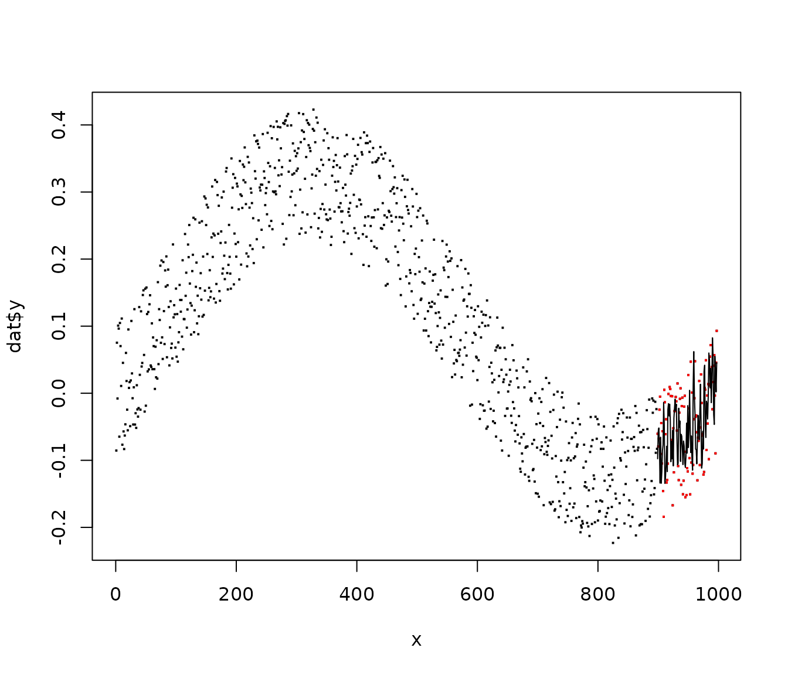

{splitTools} is a fast, lightweight toolkit for data splitting.
Its two main functions partition() and
create_folds() support
data partitioning (e.g. into training, validation and test),
creating folds for cross-validation (CV),
creating repeated folds for CV,
stratified splitting (e.g. for stratified CV),
grouped splitting (e.g. for group-k-fold CV) as well as
blocked splitting (if the sequential order of the data should be retained).
The function create_timefolds() does time-series
splitting in the sense that the out-of-sample data follows the in-sample
data.
We will now illustrate how to use {splitTools} in a typical modeling workflow.
We will go through the following steps:
We split the iris data into 60% training, 20%
validation, and 20% test data, stratified by the variable
Sepal.Length. Since this variable is numeric,
stratification uses quantile binning.
Based on the validation performance, we tune the parameter
mtry of a random forest with response
Sepal.Length.
After selecting the best mtry, we evaluate the final
model on the test data.
library(splitTools)
library(ranger)
# Split data into partitions
set.seed(3451)
inds <- partition(iris$Sepal.Length, p = c(train = 0.6, valid = 0.2, test = 0.2))
str(inds)
#> List of 3
#> $ train: int [1:81] 2 3 6 7 8 10 11 18 19 20 ...
#> $ valid: int [1:34] 1 12 14 15 27 34 36 38 42 48 ...
#> $ test : int [1:35] 4 5 9 13 16 17 25 39 41 45 ...
train <- iris[inds$train, ]
valid <- iris[inds$valid, ]
test <- iris[inds$test, ]
# Root-mean-squared error function used to evaluate results
rmse <- function(y, pred) {
sqrt(mean((y - pred)^2))
}
# Tune mtry on validation data
valid_mtry <- numeric(ncol(train) - 1)
for (i in seq_along(valid_mtry)) {
fit <- ranger(Sepal.Length ~ ., data = train, mtry = i)
valid_mtry[i] <- rmse(valid$Sepal.Length, predict(fit, valid)$predictions)
}
valid_mtry
#> [1] 0.3809234 0.3242173 0.3208119 0.3241518
(best_mtry <- which.min(valid_mtry))
#> [1] 3
# Fit and test final model
final_fit <- ranger(Sepal.Length ~ ., data = train, mtry = best_mtry)
rmse(test$Sepal.Length, predict(final_fit, test)$predictions)
#> [1] 0.3480947Since the iris data consists of only 150 rows, investing
20% of observations for validation seems like a waste of resources, and
the performance estimates might not be very robust. So let’s replace
simple validation by five-fold CV, again using stratification on the
response variable.
Split iris into 80% training data and 20% test,
stratified by the variable Sepal.Length.
Use stratified five-fold CV to tune the parameter
mtry.
After selecting the best mtry by this
“GridSearchCV”, we evaluate the final model on the test data.
# Split into training and test
inds <- partition(iris$Sepal.Length, p = c(train = 0.8, test = 0.2))
train <- iris[inds$train, ]
test <- iris[inds$test, ]
# Get stratified CV in-sample indices
folds <- create_folds(train$Sepal.Length, k = 5)
# Tune mtry by GridSearchCV
valid_mtry <- numeric(ncol(train) - 1)
for (i in seq_along(valid_mtry)) {
cv_mtry <- numeric()
for (fold in folds) {
fit <- ranger(Sepal.Length ~ ., data = train[fold, ], mtry = i)
cv_mtry <- c(
cv_mtry,
rmse(train[-fold, "Sepal.Length"], predict(fit, train[-fold, ])$predictions)
)
}
valid_mtry[i] <- mean(cv_mtry)
}
# Result of CV
valid_mtry
#> [1] 0.3870915 0.3460605 0.3337763 0.3302831
(best_mtry <- which.min(valid_mtry))
#> [1] 4
# Use optimal mtry to make model
final_fit <- ranger(Sepal.Length ~ ., data = train, mtry = best_mtry)
rmse(test$Sepal.Length, predict(final_fit, test)$predictions)
#> [1] 0.2970876If feasible, repeated CV is recommended in order to reduce uncertainty in decisions. Otherwise, the process remains the same. When we use three repetitions in 5-fold CV, instead of getting five performance estimates, we get 15 such values.
# We start by making repeated, stratified CV folds
folds <- create_folds(train$Sepal.Length, k = 5, m_rep = 3)
length(folds)
#> [1] 15
for (i in seq_along(valid_mtry)) {
cv_mtry <- numeric()
for (fold in folds) {
fit <- ranger(Sepal.Length ~ ., data = train[fold, ], mtry = i)
cv_mtry <- c(
cv_mtry,
rmse(train[-fold, "Sepal.Length"], predict(fit, train[-fold, ])$predictions)
)
}
valid_mtry[i] <- mean(cv_mtry)
}
# Result of CV
valid_mtry
#> [1] 0.3934294 0.3544207 0.3422013 0.3393454
(best_mtry <- which.min(valid_mtry))
#> [1] 4
# Use optimal mtry to make model
final_fit <- ranger(Sepal.Length ~ ., data = train, mtry = best_mtry)
rmse(test$Sepal.Length, predict(final_fit, test)$predictions)
#> [1] 0.2937055When modeling time series, usual CV destroys the sequential nature of the data. This can be avoided by the following modification of k-fold CV:
The data is first split into \(k+1\)
blocks \(B_1, ..., B_{k+1}\), in
sequential order. Depending of type = "extending" (default)
or type == "moving", the following data sets are used in
CV:
First fold: \(B_1\) is used for training, \(B_2\) for evaluation.
Second fold: \(\{B_1, B_2\}\) (type “extending”) or \(B_2\) (type “moving”) are used for training, \(B_3\) for evaluation.
…
\(k\)-th fold: Rows in \(\{B_1, ..., B_k\}\) (“extending”) or \(B_{k}\)(“moving”) are used for training, those in \(B_{k+1}\) for evaluation.
These schemata make sure that the evaluation data always follows the
training data. Note that the training data grows over the whole process
linearly with type = "extending", whereas its length is
approximately constant with type = "moving".
In order to have a final evaluation of the optimized model, typically an initial blocked split into sequential training and testing data is done.
We first create a time series and derive lagged features for
training. Then, again, we optimize mtry of a random forest
by time-series CV. We evaluate the optimized model on the last 10% of
the time series.
# Create data
set.seed(452)
n <- 1000
t <- seq(0, 2 * pi, length.out = n)
y <- 0.2 * sin(t) - 0.1 * cos(t) + 0.2 * runif(n)
plot(y ~ t, pch = ".", cex = 2)
# Helper function
Lag <- function(z, k = 1) {
c(z[-seq_len(k)], rep(NA, k))
}
Lag(1:4, k = 1)
#> [1] 2 3 4 NA
# Add lagged features
dat <- data.frame(
y,
lag1 = Lag(y),
lag2 = Lag(y, k = 2),
lag3 = Lag(y, k = 3)
)
dat <- dat[complete.cases(dat), ]
head(dat)
#> y lag1 lag2 lag3
#> 1 -0.085447174 0.075314649 -0.007841658 0.10081516
#> 2 0.075314649 -0.007841658 0.100815165 0.09635395
#> 3 -0.007841658 0.100815165 0.096353945 -0.06476294
#> 4 0.100815165 0.096353945 -0.064762935 0.10474890
#> 5 0.096353945 -0.064762935 0.104748904 0.07030228
#> 6 -0.064762935 0.104748904 0.070302283 0.01085425
cor(dat)
#> y lag1 lag2 lag3
#> y 1.0000000 0.8789100 0.8858208 0.8840929
#> lag1 0.8789100 1.0000000 0.8791226 0.8858995
#> lag2 0.8858208 0.8791226 1.0000000 0.8791388
#> lag3 0.8840929 0.8858995 0.8791388 1.0000000
# Block partitioning
inds <- partition(dat$y, p = c(train = 0.9, test = 0.1), type = "blocked")
str(inds)
#> List of 2
#> $ train: int [1:898] 1 2 3 4 5 6 7 8 9 10 ...
#> $ test : int [1:99] 899 900 901 902 903 904 905 906 907 908 ...
train <- dat[inds$train, ]
test <- dat[inds$test, ]
# Get time series folds
folds <- create_timefolds(train$y, k = 5)
str(folds)
#> List of 5
#> $ Fold1:List of 2
#> ..$ insample : int [1:150] 1 2 3 4 5 6 7 8 9 10 ...
#> ..$ outsample: int [1:150] 151 152 153 154 155 156 157 158 159 160 ...
#> $ Fold2:List of 2
#> ..$ insample : int [1:300] 1 2 3 4 5 6 7 8 9 10 ...
#> ..$ outsample: int [1:150] 301 302 303 304 305 306 307 308 309 310 ...
#> $ Fold3:List of 2
#> ..$ insample : int [1:450] 1 2 3 4 5 6 7 8 9 10 ...
#> ..$ outsample: int [1:150] 451 452 453 454 455 456 457 458 459 460 ...
#> $ Fold4:List of 2
#> ..$ insample : int [1:600] 1 2 3 4 5 6 7 8 9 10 ...
#> ..$ outsample: int [1:150] 601 602 603 604 605 606 607 608 609 610 ...
#> $ Fold5:List of 2
#> ..$ insample : int [1:750] 1 2 3 4 5 6 7 8 9 10 ...
#> ..$ outsample: int [1:148] 751 752 753 754 755 756 757 758 759 760 ...
# Tune mtry by GridSearchCV
valid_mtry <- numeric(ncol(train) - 1)
for (i in seq_along(valid_mtry)) {
cv_mtry <- numeric()
for (fold in folds) {
fit <- ranger(y ~ ., data = train[fold$insample, ], mtry = i)
cv_mtry <- c(
cv_mtry,
rmse(train[fold$outsample, "y"], predict(fit, train[fold$outsample, ])$predictions)
)
}
valid_mtry[i] <- mean(cv_mtry)
}
# Result of CV
valid_mtry
#> [1] 0.08227426 0.08188820 0.08230724
(best_mtry <- which.min(valid_mtry))
#> [1] 2
# Use optimal mtry to make model and evaluate on future test data
final_fit <- ranger(y ~ ., data = train, mtry = best_mtry)
test_pred <- predict(final_fit, test)$predictions
rmse(test$y, test_pred)
#> [1] 0.07184702
# Plot
x <- seq_along(dat$y)
plot(x, dat$y, pch = ".", cex = 2)
points(tail(x, length(test$y)), test$y, col = "red", pch = ".", cex = 2)
lines(tail(x, length(test$y)), test_pred)
The function multi_strata() creates a stratification
factor from multiple columns that can then be passed to
create_folds(, type = "stratified") or
partition(, type = "stratified"). The resulting partitions
will be (quite) balanced regarding these columns.
Two grouping strategies are offered:
Let’s have a look at a simple example where we want to model “Sepal.Width” as a function of the other variables in the iris data set. We want to do a stratified train/valid/test split, aiming at being balanced regarding not only the response “Sepal.Width”, but also regarding the important predictor “Species”. In this case, we could use the following workflow:
set.seed(3451)
ir <- iris[c("Sepal.Length", "Species")]
y <- multi_strata(ir, k = 5)
inds <- partition(
y, p = c(train = 0.6, valid = 0.2, test = 0.2), split_into_list = FALSE
)
# Check
by(ir, inds, summary)
#> inds: train
#> Sepal.Length Species
#> Min. :4.300 setosa :30
#> 1st Qu.:5.100 versicolor:30
#> Median :5.800 virginica :30
#> Mean :5.836
#> 3rd Qu.:6.400
#> Max. :7.700
#> ------------------------------------------------------------
#> inds: valid
#> Sepal.Length Species
#> Min. :4.400 setosa :10
#> 1st Qu.:5.425 versicolor:10
#> Median :5.900 virginica :10
#> Mean :5.903
#> 3rd Qu.:6.300
#> Max. :7.900
#> ------------------------------------------------------------
#> inds: test
#> Sepal.Length Species
#> Min. :4.700 setosa :10
#> 1st Qu.:5.100 versicolor:10
#> Median :5.700 virginica :10
#> Mean :5.807
#> 3rd Qu.:6.475
#> Max. :7.100